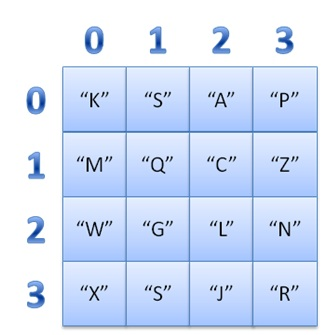
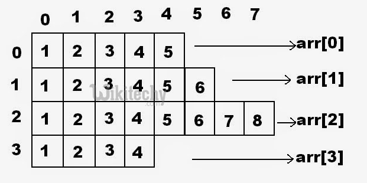

Manipulação de Arrays e Listas
Kelvin de Lucca Feltrin
Tópicos Abordados
Definição de Array
"Arrays podem ser definidos como séries, coleções ou listas de elementos, geralmente de um mesmo tipo de dados, armazenados de forma sequencial"
Definição de Array
Array é uma estrutura de dados:
- Homogênea (dados do mesmo tipo)
- Ordenada (elementos acessados por meio de posições)
- Alocado de uma vez só, em um bloco contíguo de memória
Tipos de Array
Array monodimensional (vetor)

- Cada elemento é identificado por um único índice
- Os índices de listas são “zero-based”
Array de duas dimensões (matriz)

- Pode ser visualizado como uma tabela com linhas e colunas
- Linhas (horizontais)
- Colunas (verticais)
Array multidimensional

- Um array tridimensional pode ser representado como uma coleção de arrays de duas dimensões, e assim por diante
- Indicamos os índices citando primeiramente a linha, seguida da coluna e então as demais dimensões
Arrays “Jagged”

- Cada elemento é um vetor
- Os elementos de um jagged array podem ser de diferentes dimensões e tamanhos
- Também pode ser chamado de "array-de-arrays"
Declaração e inicialização de Arrays
// Declaração de um vetor em C#
int[] numeros; // Vetor de inteiros
string[] nomes; // Vetor de strings
// Declaração de uma matriz em C#
int[,] matriz2dimensoes;
decimal[,,] matriz3dimensoes;
// Declaração de array jagged em C#
int[][] vetorDeInteiros;
float[][] vetorDeDecimais;
Declaração e inicialização de Arrays
//Inicialização de vetor junto com a declaração
int[] impares = new int[] { 1, 3, 5, 7, 9 };
//ou
int[] impares2 = { 1, 3, 5, 7, 9 };
//Listagem 6: Inicialização de matriz junto com a declaração
int[,] matriz = new int[,] { { 1, 2 }, { 3, 4 } };
//ou
int[,] matriz2 = { { 1, 2 }, { 3, 4 } };
//Listagem 7: Inicialização de jagged array junto com a declaração
int[][] jagged = new int[][]
{
new int[] {0,1,2,3},
new int[] {4,5,6,7,8,9},
new int[] {10,20,30,40}
};
//ou
int[][] jagged2 =
{
new int[] {0,1,2,3},
new int[] {4,5,6,7,8,9},
new int[] {10,20,30,40}
};
Principais métodos e propriedades do Array
- Array.BinarySearch()
- Array.Exist()
- Array.Find()
- Array.FindAll()
- Array.IndexOf()
- .Length
- .Reverse()
- .Sort()
Principais métodos e propriedades do Array
//Array.BinarySearch()
int[] nums = { 1, 6, 12, 18, 32 };
Console.WriteLine(Array.BinarySearch(nums, 12)); // 2
//Array.Exist()
string[] users = { "Steve", "Bob", "Shane", "Andrew" };
Console.WriteLine(Array.Exists(users, user => user.StartsWith("S"))); // True
//Array.Find()
int[] arrFind = new int[] { 1, 2, 3, 4, 5 };
Console.Write(Array.Find(arrFind, (elem) => elem % 2 == 0)); // 2
//Array.FindAll()
int[] arrFindAll = new int[] { 1, 2, 3, 4, 5 };
var result = Array.FindAll(arrFindAll, (elem) => elem % 2 == 0); // 2 e 4
//Array.IndexOf()
string[] usersIndexOf = { "Smith", "John", "Clark", "Peter", "John" };
Console.WriteLine(Array.IndexOf(usersIndexOf, "John")); // 1
//Length Property
int[] numbers = new int[] { 1, 2, 3, 4, 5 };
int length = numbers.Length; // Returns 5
int[,] matrix = new int[,] { { 1, 2, 3 }, { 4, 5, 6 }, { 7, 8, 9 } };
int matrixLength = matrix.Length; // Returns 9 (3 rows * 3 columns)
//Reverse() Method
int[] numbersReverse = new int[] { 1, 2, 3, 4, 5 };
Array.Reverse(numbersReverse); // Reverses the order of elements: { 5, 4, 3, 2, 1 }
//Sort() Method
int[] numbersSort = new int[] { 5, 3, 1, 4, 2 };
Array.Sort(numbersSort); // Sorts the array in ascending order: { 1, 2, 3, 4, 5 }
Vantagens e desvantagens do Array
Vantagens
- Acesso imediato aos elementos pela sua posição
Desvantagens
- Tamanho fixo
- Dificuldade para se realizar inserções e deleções
Definição de Lista em C#
"As listas em C# fazem parte do namespace System.Collections.Generic e são usadas para armazenar e gerenciar uma coleção de objetos.
Eles têm tamanho dinâmico, permitindo adicionar ou remover elementos em tempo de execução e podem armazenar itens de qualquer tipo de dados, incluindo tipos personalizados."
Definição de Lista em C#
Lista é uma estrutura de dados:
- Homogênea (dados do mesmo tipo)
- Ordenada (elementos acessados por meio de posições)
- Inicia vazia, e seus elementos são alocados sob demanda
- Cada elemento ocupa um “nó” (ou nodo) da lista
Declaração e inicialização de Listas
Usando o construtor do List:
List numbers = new List(); Usando Collection Initializers:
List fruits = new List { "Apple", "Banana", "Orange" }; Principais métodos e propriedades das Listas
- Add()
- AddRange()
- AsReadOnly()
- Capacity e Count
- Find()
- FindAll()
- Remove()
- RemoveAt()
- RemoveRange()
- Sort()
- ToArray()
Principais métodos e propriedades das Listas
//Add()
List fruits = new List { "Apple", "Banana", "Orange" };
fruits.Add("Grape");
//AddRange()
List moreFruits = new List { "Mango", "Pineapple" };
fruits.AddRange(moreFruits);
//AsReadOnly()
ReadOnlyCollection readOnlyFruits = fruits.AsReadOnly();
//Capacity e Count
int count = fruits.Count;
int capacity = fruits.Capacity;
//Find()
List numbers = new List { 8, 2, 6, 4, 1 };
int evenNumber = numbers.Find(x => x % 2 == 0); // Finds the first even number
//FindAll()
List evenNumbers = numbers.FindAll(x => x % 2 == 0); // Finds all even numbers
//Remove()
fruits.Remove("Banana");
//RemoveAt()
fruits.RemoveAt(1); // Removes the second element
//RemoveRange()
fruits.RemoveRange(1, 2); // Removes the second and third elements
//Sort()
numbers.Sort();
List names = new List { "Alice", "Bob", "Charlie" };
names.Sort((x, y) => x.Length.CompareTo(y.Length)); // Sorts by string length
//ToArray()
string[] fruitsArray = fruits.ToArray(); Vantagens e desvantagens das Listas
Vantagens
- Tamanho variável
- Facilidade para se realizar inserções e deleções
Desvantagens
- Acesso sequencial aos elementos
Conteúdo sugerido
Alocação de Memória em Listas e Arrays no C#
Bônus - List Patterns Matching
- Discard pattern ou Padrão Descartar
int[] fibonacci = { 1, 2, 3, 5, 8 };
bool resultado = false;
resultado = fibonacci is [_, _, 3, _]; // False -> tamanho não corresponde
resultado = fibonacci is [_, _, _, 3, _]; // False -> o 3 não está na mesma posição
resultado = fibonacci is [2, _, 3, _, _]; // False -> tamanho corresponde mas 2 e 3 não estão na mesma posição
resultado = fibonacci is [1, _, _, _, _]; // True -> posição e tamanho correspondem
Bônus - List Patterns Matching
- Range pattern ou Padrão de intervalo
int[] fibonacci = { 1, 2, 3, 5, 8 };
bool resultado = false;
resultado = fibonacci is [.., 8]; // True -> a lista termina com 8
resultado = fibonacci is [.., 3, _]; // False -> 3 não é o penúltimo elemento
resultado = fibonacci is [1, .., 8]; // True -> a lista inicia com 1 e termina com 8
resultado = fibonacci is [.., < 8]; // False -> o último elemento é exatamente 8
resultado = fibonacci is [.., >= 3, _, _]; // True -> 3 é o terceiro elemento do final
resultado = fibonacci is [> 1, .., 8]; // False -> o primeiro elemento não é maior que 1
Bônus - List Patterns Matching
- Var pattern ou Padrão de var
// Padrão corresponde
int[] fibonacci = { 1, 2, 3, 5, 8 };
if (fibonacci is [.., var penultimo, var ultimo])
{
Console.WriteLine($"penúltimo = {penultimo}");
Console.WriteLine($"último = {ultimo}");
}
else
Console.WriteLine("O padrão não corresponde!");
// Resultado:
// penúltimo = 5
// último = 8
// Padrão não corresponde
int[] minhaLista = { 1 };
if (minhaLista is [var primeiro, var segundo, ..])
{
Console.WriteLine($"primeiro = {primeiro}");
Console.WriteLine($"segundo = {segundo}");
}
else
Console.WriteLine("O padrão não corresponde!");
Referências
- Alocação de Memória em Listas e Arrays no C#
- Arrays em C# - Teoria e prática
- Arrays in C#: In-Depth Guide with Examples
- Arrays monodimensionais e multidimensionais no C#
- C# 11 - List Patterns Matching
- C# Array Methods | Ishaan Sheikh (frikishaan.com)
- C# Array vs List: Differences & Performance
- C# Collections parte 1: Listas, arrays, listas ligadas, dicionários e conjuntos
- C# COMPLETO Programação Orientada a Objetos + Projetos
- C# Jagged array
- C# List vs Array
- Lists in C#: A Guide to Dynamic Data Storage